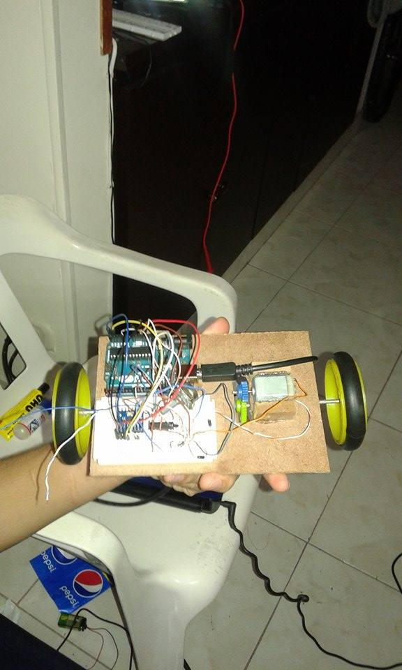
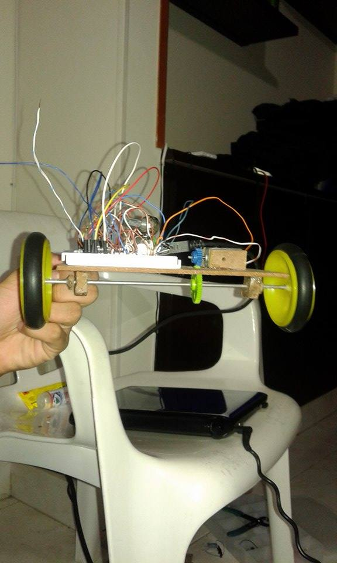

Aspectos técnicos y generales del proyecto
un segway es un vehículo de transporte ligero eléctrico de dos ruedas, con auto balanceo controlado por ordenador. inventado por Dean Kamen y presentado en diciembre de 2001. Es producido por la compañía Segway Inc.Este proyecto consistío en hacer un dispositivo a escala basado en el segway empleando principalmente un arduino uno,giroscopio, L293D y un motor DC a 9 voltios de 9500 revoluciones.
listado de componentes:
-Arduino Uno
-Motor DC a 9 voltios
-Bateria DC de 9 voltios
-tabla de madera
-giroscopio
-integrado L293D
-Llantas de jueguete de 10 cms de diametros
Definiciones de PWM, puente H y giroscopio.
PWM, es algo que se ha convertido en una práctica habitual de los interruptores de potencia modernos, controlando la energía de inercia. Esta acción tiene en cuenta la modificación del proceso de trabajo de una señal de tipo periódico. lo cual puede tener varios objetivos, como tener el control de la energía que se proporciona a una carga o llevar a cabo la transmision de datos. Para el caso particular de esta práctica será usado para controlar la velocidad del motor.
Un Puente en H es un circuito electrónico que permite a un motor eléctrico DC girar en ambos sentidos, avance y retroceso. Son ampliamente usados en robótica y como convertidores de potencia. Los puentes H están disponibles como circuitos integrados, pero también pueden construirse a partir de componentes discretos. Para la práctica del mini segway se escogio el integrado L293D
Los giroscopios electrónicos son dispositivos de estado sólido basados en la aceleración de Coriollis. En ellos, un material piezoeléctrico se hace oscilar a la frecuencia de resonancia, de modo que al girar, la fuerza de Coriollis (proporcional a la velocidad angular) provoca la aparición de un diferencia de potencial debida a la desviación del prisma, permitiendo la medida de la velocidad de rotación
Descripcion del prodecimiento
El montaje consistía de una base de madera sobre la cual estaban fijos los diferentes componentes del sistema como se puede apreciar en la figura.1

Figura.1.a Mini segway con arduino uno

Figura. 1.b Mini segway con arduino uno
los motores se controlaron empleando un puente H de referencia L293D, el cual ejecutaba las intrucciones que se le asignaban desde el arduino. Instrucciones que estaban basadas en las variaciones de la velocidad angular de la base del mini segway medidas por el giroscopio, a partir de las cuales se generaba el tren de pulsos necesario para mantener el sistema en equilibrio, a lo que tambien se le conoce como pwm. Inicialmente el código se cargaba al arduino y luego este controlaba el mini segway de manera autonoma sin depender de conexión al pc, pero dado que el consumo de energia era constante optamos por realizar las pruebas con una fuente de alimentación cableada como se puede ver en el siguiente video.
<iframe width="420" height="315" src="https://www.youtube.com/embed/LwTLuSsxbU0" frameborder="0" allowfullscreen></iframe>